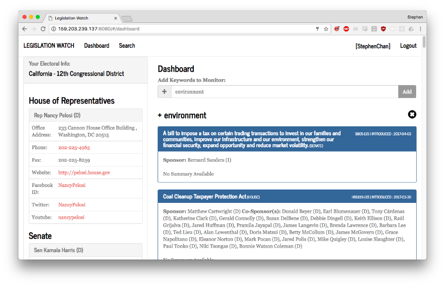
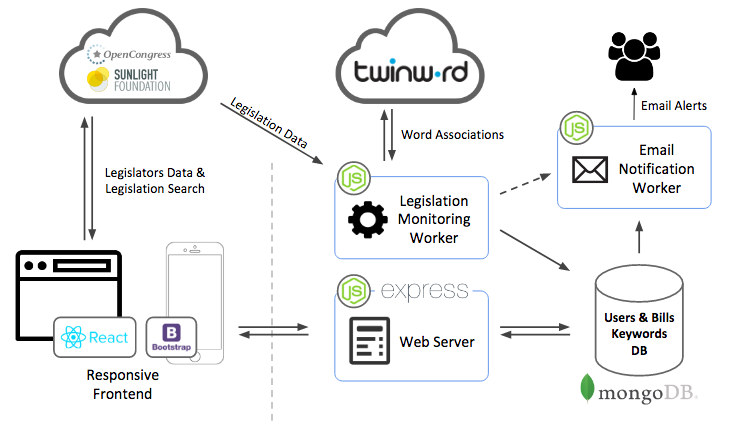

With thousands of Bills being introduced to congress each year, how do informed citizens keep track of legislations that are important to them? We created an application to keep monitor incoming legislations so citizens can be alerted and take action.
Project Frontend Code on Github | Live Demo

Motivation
A healthy democracy requires the active participation of each individual within the community. However, it is difficult and time consuming for individuals to understand and track the thousands of legislations & bills that are passed through congress. This difficulty makes contribute to widespread voter apathy and a suboptimal democratic government.
This application is designed to help lower the difficult and costs of tracking legislations that are of importance to each individual. By providing timely alert to incoming legislation, individuals can react and response organize timely action to oppose or support certain legislations.
Features
- Individualized House of Representatives & Senators Social Media + Contact Information for Each User
- Search Function for Existing Legislations
- Monitor New Incoming Legislation with Email Alerts for Specific Keywords
System Architecture

Frontend
The responsive frontend is built on the Bootstrap framework with the React library. Legislation search functionality and up-to-date legislator contact information is done by calls to Sunlight Foundation's OpenCongress API.
Backend
The application backend consists of three components: web server, legislation monitoring worker and a email notification worker.
The web server is responsible for user authentication, user address geolocation (via Google Maps API), and responding to client request for up-to-date monitored legislation results for the dashboard.
The legislation monitoring working periodically poll the OpenCongress API for new and updated legislations. New legislations are associated with keywords by running their title and text through the Twinwords natural language processing API. These legislations and their associated keywords are then stored in the database. A signal is subsequently sent to the email notification worker to notify it of new incoming legislations.
The email notification worker looks through keywords that are of interest to each individual user, and an email notification is sent when there are new and progressing legislations that matches the user specified keywords.
What's Next?
To make the tool more effective, several social collaboration features are envisioned:
- Legislation Text Annotations
- Discussion Forum
- Legislation Feedback (upvotes / downvotes)
- Related News / Online Commentary Discovery